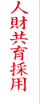
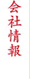
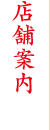
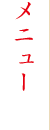
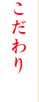

ねぎしの誕生は1981年、新宿歌舞伎町の1店舗から。
当時の牛タンといえば、お酒のおつまみとして食べられることが多く、お客様は男性客ばかりでした。
女性客にもこの美味しさを知ってもらいたい… そこで牛タンと麦めしとテールスープに
健康的な「とろろ」を組み合わせた「ねぎしセット」をご提供したのがはじまり。
今では、この組み合わせは当たり前になっていますが、これはねぎしが初めて生み出したものなのです。